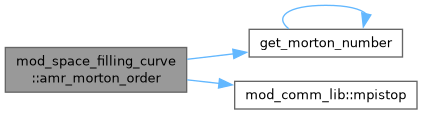
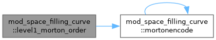
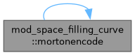

Functions/Subroutines | |
| subroutine | level1_morton_order |
| build Morton space filling curve for level 1 grid | |
| integer(kind=8) function | mortonencode (igd, ndim) |
| subroutine | amr_morton_order |
| Construct Morton-order as a global recursive lexicographic ordering. | |
| subroutine | get_morton_range |
| Set the Morton range for each processor. | |
| subroutine | get_morton_range_active |
| subroutine | get_morton_range_costed |
| Cost-weighted SFC partition. Reduces the per-rank block_cost array into a global Morton-indexed cost, EWMA-blends with the persistent costlist, and partitions the Morton order so each rank's cumulative cost is balanced. Falls back to equal-block-count if all costs are zero (cold start before the first measured step). | |
Function/Subroutine Documentation
◆ amr_morton_order()
| subroutine mod_space_filling_curve::amr_morton_order |
Construct Morton-order as a global recursive lexicographic ordering.
Definition at line 85 of file mod_space_filling_curve.t.

◆ get_morton_range()
| subroutine mod_space_filling_curve::get_morton_range |
Set the Morton range for each processor.
Definition at line 132 of file mod_space_filling_curve.t.
◆ get_morton_range_active()
| subroutine mod_space_filling_curve::get_morton_range_active |
Definition at line 167 of file mod_space_filling_curve.t.
◆ get_morton_range_costed()
| subroutine mod_space_filling_curve::get_morton_range_costed |
Cost-weighted SFC partition. Reduces the per-rank block_cost array into a global Morton-indexed cost, EWMA-blends with the persistent costlist, and partitions the Morton order so each rank's cumulative cost is balanced. Falls back to equal-block-count if all costs are zero (cold start before the first measured step).
Definition at line 253 of file mod_space_filling_curve.t.
◆ level1_morton_order()
| subroutine mod_space_filling_curve::level1_morton_order |
build Morton space filling curve for level 1 grid
Definition at line 7 of file mod_space_filling_curve.t.

◆ mortonencode()
| integer(kind=8) function mod_space_filling_curve::mortonencode | ( | integer(kind=4), intent(in) | ig, |
| integer(kind=4), intent(in) | d, | ||
| integer(kind=4), intent(in) | ndim ) |
Definition at line 58 of file mod_space_filling_curve.t.

Generated by